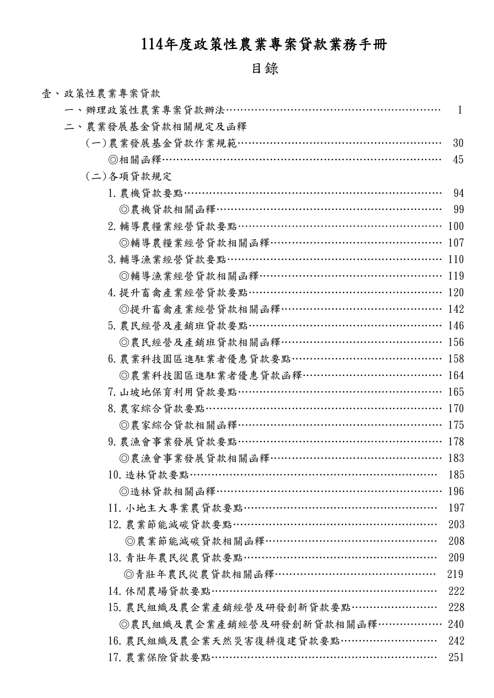

目錄第1頁
手冊頁：目錄 PDF頁：1／359
{kind=link}

展開查看PDF原始文字層
複雜表格欄列可能因文字層順序失真，請搭配原頁預覽查閱。
114年度政策性農業專案貸款業務手冊 目錄 壹、 政策性農業專案貸款 一、 辦理政策性農業專案貸款辦法…………………………………………………… 1 二、 農業發展基金貸款相關規定及函釋 (一) 農業發展基金貸款作業規範………………………………………………… 30 ◎相關函釋…………………………………………………………………… 45 (二) 各項貸款規定 1. 農機貸款要點……………………………………………………………… 94 ◎農機貸款相關函釋……………………………………………………… 99 2. 輔導農糧業經營貸款要點………………………………………………… 100 ◎輔導農糧業經營貸款相關函釋………………………………………… 107 3. 輔導漁業經營貸款要點…………………………………………………… 110 ◎輔導漁業經營貸款相關函釋…………………………………………… 119 4. 提升畜禽產業經營貸款要點……………………………………………… 120 ◎提升畜禽產業經營貸款相關函釋……………………………………… 142 5. 農民經營及產銷班貸款要點……………………………………………… 146 ◎農民經營及產銷班貸款相關函釋……………………………………… 156 6. 農業科技園區進駐業者優惠貸款要點…………………………………… 158 ◎農業科技園區進駐業者優惠貸款函釋………………………………… 164 7. 山坡地保育利用貸款要點………………………………………………… 165 8. 農家綜合貸款要點………………………………………………………… 170 ◎農家綜合貸款相關函釋………………………………………………… 175 9. 農漁會事業發展貸款要點………………………………………………… 178 ◎農漁會事業發展貸款相關函釋………………………………………… 183 10. 造林貸款要點…………………………………………………………… 185 ◎造林貸款相關函釋……………………………………………………… 196 11. 小地主大專業農貸款要點……………………………………………… 197 12. 農業節能減碳貸款要點………………………………………………… 203 ◎農業節能減碳貸款相關函釋………………………………………… 208 13. 青壯年農民從農貸款要點……………………………………………… 209 ◎青壯年農民從農貸款相關函釋……………………………………… 219 14. 休閒農場貸款要點……………………………………………………… 222 15. 農民組織及農企業產銷經營及研發創新貸款要點…………………… 228 ◎農民組織及農企業產銷經營及研發創新貸款相關函釋……………… 240 16. 農民組織及農企業天然災害復耕復建貸款要點……………………… 242 17. 農業保險貸款要點……………………………………………………… 251